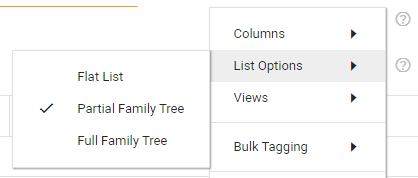
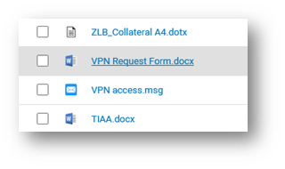
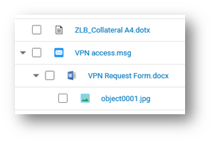

You can define if/how related documents are shown in the Document List.
In the Document List, select the Settings icon

Select Flat List to hide family relations between documents in Document List.

|
|
Note: In Document View you can view the Family Tree, but only if the document is related to other documents. |
Select Partial Family Tree to view only the parents (and the parents of the parents of the parents etc.) of the matched documents.
Select Full Family Tree to view all family relations of the matched documents.
Grouping document families is particularly useful with complex email chains, with attachments and nested attachments or emails attached to emails attached to emails. A full family tree allows you to quickly and directly navigate to any item in the chain. The chain's custodian, the file type, ID number, and other information can be viewed immediately if the correct columns are selected.

View the family related fields for more relevant information. Add those fields via Columns, or view them as Facets.